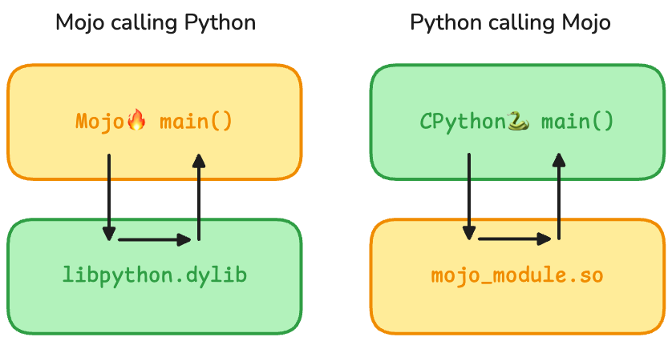
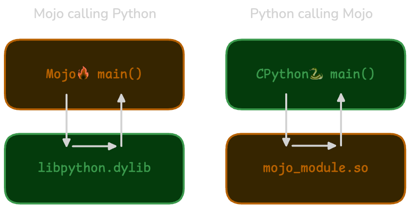

Python interoperability
The shape of the boundary between Mojo and Python.
Not only does Mojo use a Pythonic syntax, our plan is to provide full compatibility with the Python ecosystem. There are two types of compatibility (or interoperability) that we support:
-
You can import existing Python modules and use them in a Mojo program. This is 100% compatible because we use the CPython runtime without modification for full compatibility with existing Python libraries. You can construct Python objects and call Python functions directly from Mojo, using the CPython interpreter as a dynamic library (shown as
libpython.dylibin figure 1). -
You can extend your Python code with high-performance Mojo code (or incrementally migrate Python code to Mojo). Because Mojo is a compiled language, we can't directly "evaluate" Mojo code from Python. Instead, you must declare which Mojo functions and types are available to be called from Python (declare the "bindings"), and then you can import them in your Python code (shown as
mojo_modulein figure 1) just like any other module—there's no extra compilation step.


By embracing both directions of language interoperability, you can choose how to use Mojo with Python in a way that works best for your use case.
To learn more about bridging Python ↔ Mojo, continue reading:
Calling Python from Mojo
Calling Mojo from Python
This chapter is a faithful rendering of the Mojo documentation page https://mojolang.org/docs/manual/python/, saved Thu, 01 Oct 2026 15:41:58 GMT.